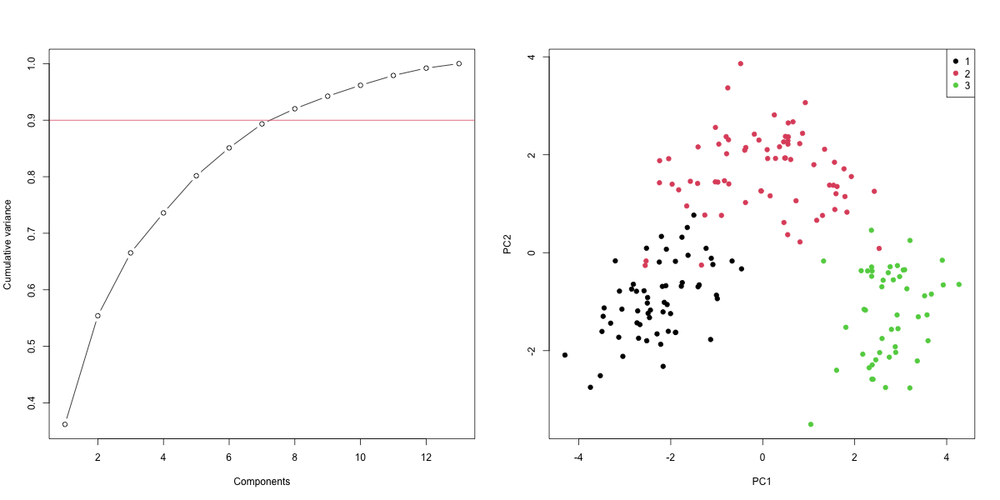

Executed R analysis. See README for methodology, provenance, and limitations.

{
"observations": 178,
"features": 13,
"components_90_percent": 8,
"retained_variance": 0.9201754434577,
"standardized_reconstruction_mse": 0.07937610397743,
"pseudoinverse_agreement": 0,
"minimum_norm_solution": [
3.5,
4.5,
3.5,
4.5
],
"solution_residual": 3.552713678801e-15
}